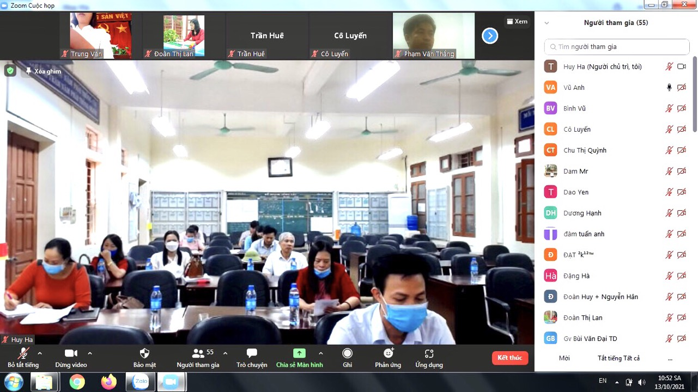
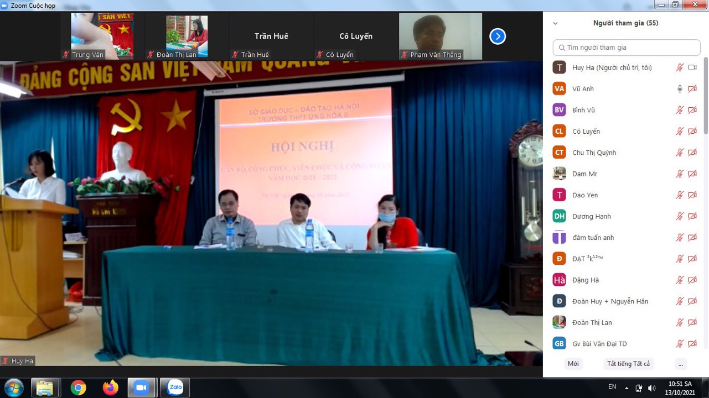

TRƯỜNG THPT ỨNG HÒA B - QUÁ TRÌNH TRƯỞNG THÀNH VÀ PHÁT TRIỂN
Thực hiện nhiệm vụ năm học, sáng ngày 13/10/2021, trường THPT Ứng Hòa B đã long trọng tổ chức Hội nghị Cán bộ - công chức - viên chức và người lao động năm học 2021 - 2022 bằng hình thức kết hợp cả trực tiếp và trực tuyến.
Hội nghị Công chức, viên chức là hoạt động thường niên của nhà trường, một mặt đánh giá, tuyên dương những kết quả đạt được trong công tác giáo dục của năm học trước, mặt khác nghiêm túc rút ra nguyên nhân của những hạn chế, tồn tại; từ đó đề ra phương hướng hoạt động phù hợp cho năm học mới. Đây cũng là dịp để mỗi thành viên trong hội đồng sư phạm nhà trường thực hiện quyền dân chủ đề xuất ý kiến, bày tỏ nguyện vọng đối với lãnh đạo nhà trường. Trực tiếp đặt vấn đề để cùng bàn thảo, hội nghị là tìm tiếng nói đồng thuận, đồng tâm, chung sức phát triển sự nghiệp giáo dục của nhà trường. Đồng thời đây cũng là cơ hội để nhà trường kiến nghị những quyền lợi chính đáng của công chức, viên chức và người lao động đối với các cấp lãnh đạo.
Mở đầu chương trình Hội nghị, Thầy Phạm Văn Sáng, Hiệu trưởng nhà trường trình bày trước hội nghị dự thảo Báo cáo tổng kết năm học 2020 – 2021. Bản Báo cáo đánh giá cao tâm sức của thầy và trò của nhà trường đã phấn đấu đạt và vượt những chỉ tiêu đề ra trong Nghị quyết năm học như: Đẩy mạnh thực hiện nghiêm các Nghị quyết và văn bản chỉ đạo; rà soát, quy hoạch, phát triển mạng lưới cơ sở giáo dục và đào tạo. Nâng cao chất lượng đội ngũ nhà giáo và cán bộ quản lý giáo dục; nâng cao chất lượng giáo dục, triển khai chương trình, sách giáo khoa giáo dục phổ thông 2020. Đẩy mạnh định hướng nghề nghiệp; đổi mới quản lý và nâng cao hiệu quả của giáo dục; tăng cường giáo dục đạo đức, lối sống, kỹ năng sống, giáo dục thể chất cho học sinh, bảo đảm an toàn trường học; nâng cao hiệu quả giáo dục. Thực hiện đổi mới phương pháp dạy học; kiểm tra đánh giá (triển khai ra đề kiểm tra theo ma trận đề); xây dựng nguồn học liệu mở, ứng dụng công nghệ thông tin trong giảng dạy. Công tác đổi mới phương pháp dạy học và đổi mới kiểm tra – đánh giá kết quả học tập của học sinh trên cơ sở đảm bảo chuẩn kiến thức – kỹ năng các môn học.
Dự thảo Phương hướng nhiệm vụ năm học 2021- 2022 đặt ra nhiều vấn đề về đổi mới quản lí giáo dục và phương pháp dạy học nhằm nâng cao “chất lượng và hiệu quả” giáo dục mũi nhọn và giáo dục toàn diện. Tiếp tục triển khai kế hoạch thực hiện Nghị quyết 29-NQ/TW , triển khai kế hoạch đổi mới chương trình sách giáo khoa giáo dục phổ thông. Tổ chức thực hiện nghiêm túc, linh hoạt, sáng tạo chương trình, kế hoạch giáo dục, từng bước nâng cao chất lượng, hiệu quả hoạt động giáo dục. Tiếp tục triển khai tích cực và hiệu quả các cuộc vận động và các phong trào bằng những nội dung, hình thức thiết thực, hiệu quả, phù hợp. Thực hiện đổi mới phương pháp dạy học sâu rộng hơn, triệt để hơn quán triệt sâu sắc để cán bộ quản lý, giáo viên và học sinh.
Đoàn Chủ tịch đã giải đáp các ý kiến được tổng hợp từ h cấp tổ. Phần lớn các các kiến nghị liên quan đến vấn đề đổi mới phương pháp giáo dục và sửa chữa, đầu tư về cơ sở vật chất dạy học. Các ý kiến đều được giải trình thỏa đáng, những hạn chế, tồn tại chủ yếu vì lí do khách quan sẽ được tiếp tục hoàn thiện trong đầu năm học này. Hội nghị đã biểu quyết thống nhất những nhiệm vụ, các giải pháp trọng tâm, các chỉ tiêu phấn đấu và thông qua Nghị quyết nhiệm vụ năm học. Bản Nghị quyết là tâm sức, là niềm tin và hi vọng của toàn thể cán bộ, giáo viên, nhân viên của trường bắt đầu một năm học mới hứa hẹn nhiều thay đổi lớn lao. Điều đó thể hiện rất rõ trong lời phát động thi đua năm học của Chủ tịch Công đoàn nhà trường.
Năm học 2021-2022, Thầy và trò Trường THPT Ứng Hòa B quyết tâm thực hiện thắng lợi nhiệm vụ năm học.
Một số hình ảnh trong hội nghị:
 